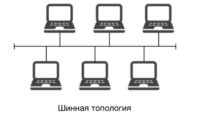
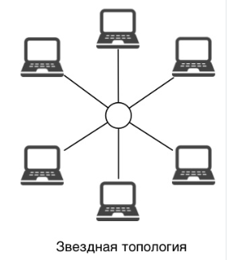
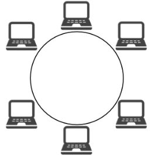

| Номер | Рисунок | Краткое описание |
|---|---|---|
| 1 |  | Все устройства подключены к одному общему кабелю (магистрали). Данные передаются по шине, и каждое устройство проверяет, предназначены ли данные ему. |
| 2 |  | Все устройства подключены к центральному узлу (например, коммутатору или концентратору). Вся передача данных идёт через центральный узел. |
| 3 |  | Устройства соединены последовательно в замкнутое кольцо. Данные передаются по кругу от одного устройства к другому до достижения адресата. |